Years of proven experience
For more than three decades, major national organisations have relied on us for diving work on dams, barrages, powerhouses and other critical infrastructure.
Commercial diving for dams, barrages and powerhouses, delivered by certified divers with 39 years of experience. Inspection, repair, installation and recovery, anywhere in Pakistan, day or night.
Certified & qualified
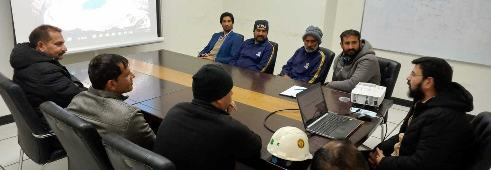
Atlantic Divers is Pakistan's first ISO-certified commercial scuba diving company. For almost 39 years, many of the country's largest organisations have relied on us to keep their dams, barrages and powerhouses operating safely.
Our team brings together PADI and NAUI certified divers and retired Pakistan Navy and Pakistan Army SSG commercial divers. We also use SONAR technology on dams, barrages and powerhouses, giving clients an accurate picture of what lies below the waterline.
Work with usExperience, qualified people, the right equipment, and a team that answers the phone at any hour. Our reputation is built on trust, safety and consistent results in some of Pakistan's most challenging underwater conditions.
For more than three decades, major national organisations have relied on us for diving work on dams, barrages, powerhouses and other critical infrastructure.
PADI and NAUI certified professionals working alongside retired Pakistan Navy & Army SSG commercial divers, to world-class safety and operational standards.
SONAR systems and specialised diving equipment for accurate inspections, dependable repairs and complex technical work underwater.
Gates jam and equipment gets lost at any hour. With our 24-hour diving service, a qualified team is ready to respond whenever you need us.
Fifteen specialist services, from gate installation and SONAR surveys to welding, salvage and diver training. Every job is planned and carried out under our ISO 45001 safety system.
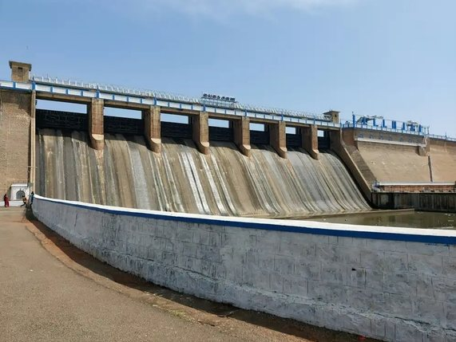
Complete commercial diving support for hydropower and water-control structures: inspection, maintenance and emergency repair. We help keep critical facilities safe, efficient and reliable for the long term.
Gates & structures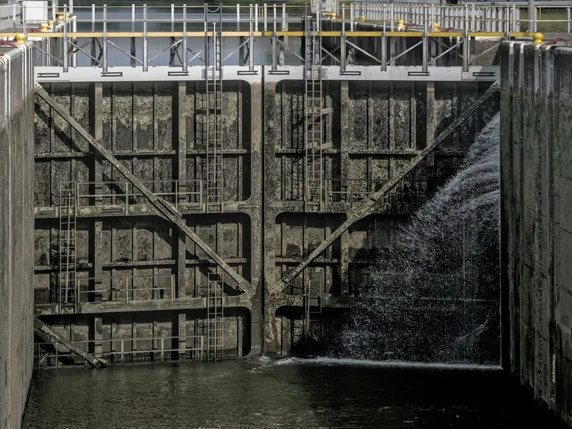
Accurate placement and seating of bulkhead gates to isolate intakes and conduits. We also seal cracks, joints and voids with underwater epoxy grouting for durable, watertight results.
Gates & structures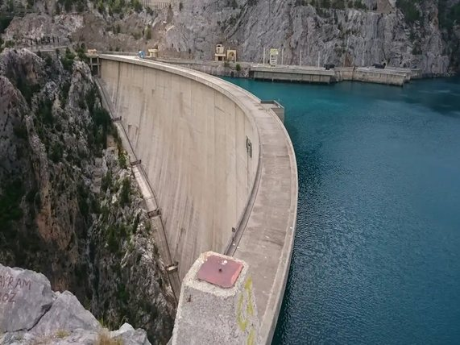
Installation, inspection and maintenance of the radial gates that control flow in dams and canals. Divers make precise adjustments and repairs to stop leaks and keep gates running smoothly for flood control and irrigation.
Gates & structures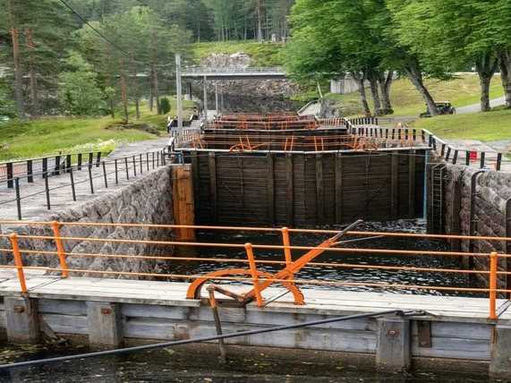
Placement and sealing of stop logs to dewater sections for maintenance. Divers position and secure each log to form a reliable seal during powerhouse outages, so inspection and repair can go ahead safely.
Gates & structures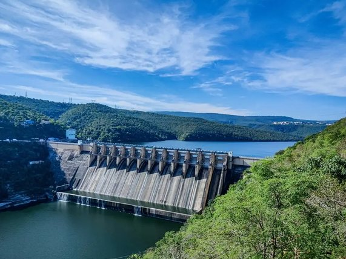
Installation and servicing of roller gates at water intakes. Divers align and lubricate gates underwater to prevent operational failures and protect turbines from debris.
Gates & structures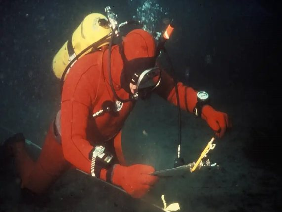
Concrete repairs using specialised mixes that cure underwater. Divers prepare surfaces, fill voids and reinforce weakened areas to extend the life of hydraulic structures.
Underwater engineering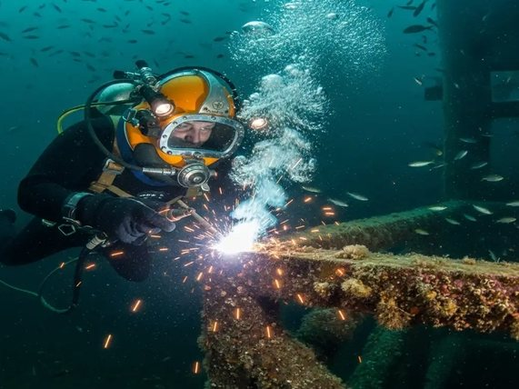
Wet welding with waterproof electrodes to repair gates, pipes and steel structures in place. No draining required, making it ideal for emergency repairs and extending asset life.
Underwater engineering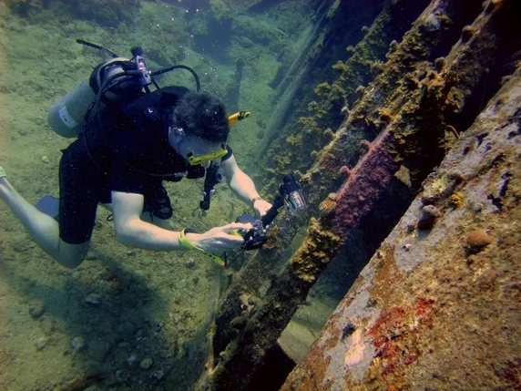
Controlled cutting of steel, concrete and obstructions using thermal lances and abrasive tools. Damaged sections come out cleanly without compromising the surrounding structure.
Underwater engineering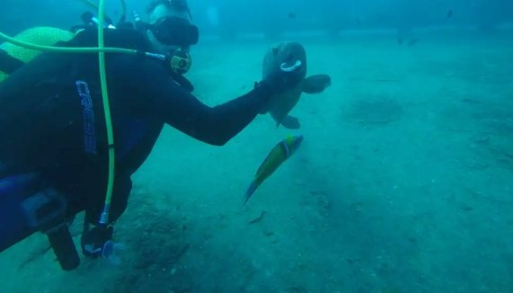
Precision drilling into submerged rock and concrete for anchors, samples and repairs. Divers use hydraulic tools to reach exact depths and positions for gate installation and reinforcement.
Underwater engineering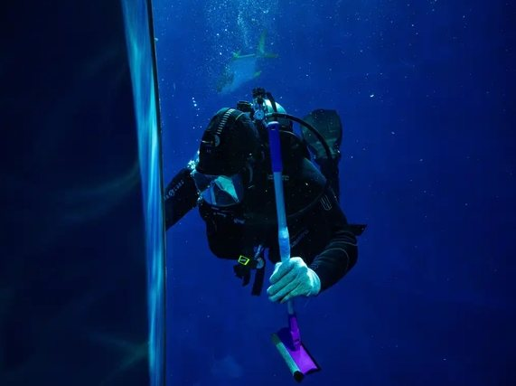
Compressed-air lifting to clear sediment, debris and loose material from intakes, trenches and excavations. An efficient, environmentally friendly alternative to dredging.
Underwater engineering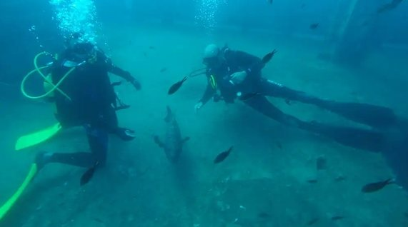
Visual and non-destructive inspection of the sill beams that support gates in dams and intakes. We document corrosion, wear and misalignment early, before they lead to gate failure or water loss.
Inspection & recovery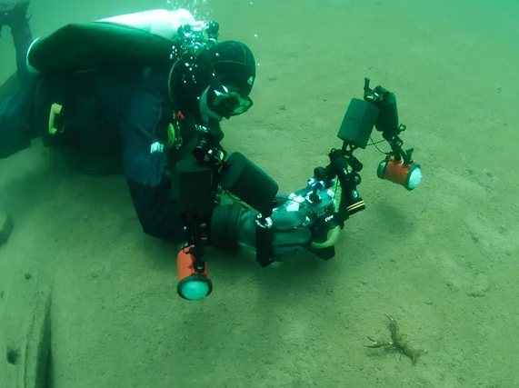
Mapping of submerged structures using SONAR, ROVs and diver observation. Our surveys pinpoint defects in dams and barrages, giving you the data to plan maintenance and meet compliance requirements.
Inspection & recovery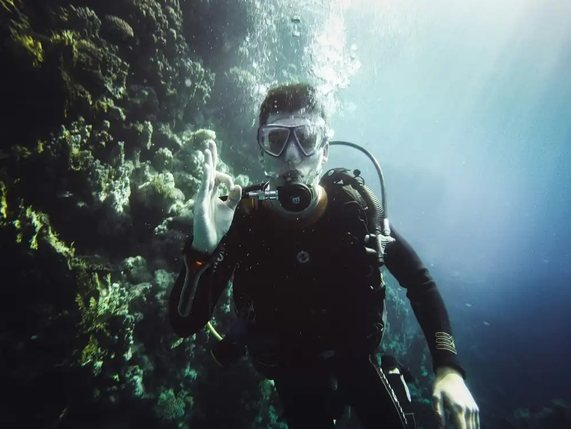
High-resolution photos and video of underwater structures, even in low light. Clear visual evidence for inspection reports, engineering assessments and progress tracking.
Inspection & recovery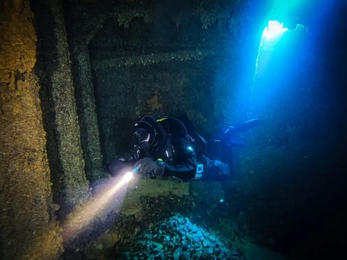
Recovery of sunken equipment, debris and structures using lift bags and cranes. Divers locate, rig and retrieve items safely, getting operations back on track with minimal environmental impact.
Inspection & recovery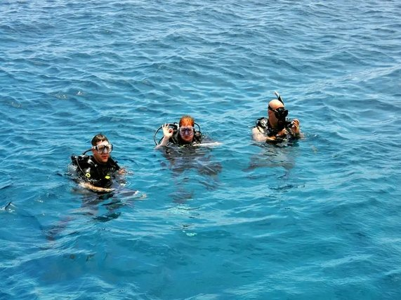
PADI courses including Open Water, Advanced Open Water, Rescue Diver and specialty programs, plus introductory classes for beginners. Taught by experienced, certified instructors with a focus on safety and hands-on practice.
TrainingWe work alongside engineers, plant operators and contractors on assets where downtime is expensive and there is no margin for error.
Gate operations, sill beam inspection and SONAR surveys of submerged faces.
Radial and stop log gate work, debris clearance and structural checks.
Outage support, intake isolation and object retrieval in powerhouses.
Cooling water intake inspection, cleaning and repair.
Pile and jetty reinforcement, cutting, welding and anchor recovery.
Intake desilting, conduit inspection and gate maintenance.
We review drawings, site conditions and your objectives, then assess access, water flow and hazards.
We prepare a dive plan and risk assessment under our ISO 45001 system, including isolation and emergency procedures.
Qualified divers carry out the job with surface supervision and communications throughout.
You receive photos, findings and clear recommendations for any follow-up work.
ISO 45001 is the international standard for occupational health and safety management. We were the first commercial diving company in Pakistan to be certified, so every dive we make follows a documented, audited system, never guesswork.
Occupational Health & Safety
Management System
Plant operators, engineers and marine teams call us when the job is urgent and conditions are tough.
“We hired their dive team for an urgent underwater inspection on our cooling water intake system. Not only did they respond the same day, but their reporting was detailed, clear, and backed with high-quality footage. Their divers knew exactly what they were doing and worked safely even in low-visibility conditions. Easily the most reliable commercial diving company we’ve dealt with.”
“Our jetty reinforcement project required highly accurate underwater cutting and welding. Their divers handled everything seamlessly. The coordination with our surface engineers was smooth, and the final results were spot-on. They finished ahead of schedule and helped us avoid costly delays. Highly recommended for any heavy-duty marine construction job.”
“We had a barge anchor lost at depth during a storm, and recovery was critical to resume operations. Their team arrived equipped, assessed the site, and executed the lift with zero complications. Clear communication, safe procedures, and fair pricing. We’ll definitely be working with them again for future underwater recovery projects.”
Our team on dams, barrages, intakes and jetties across Pakistan, from pre-dive briefings to work below the surface.
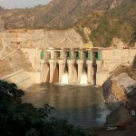
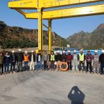
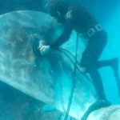
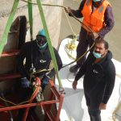
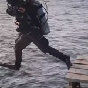
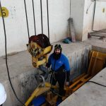
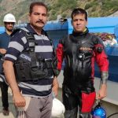
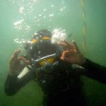
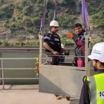
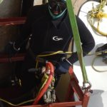
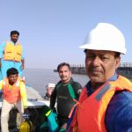
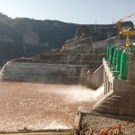
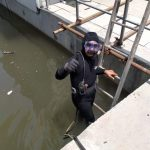
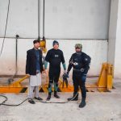
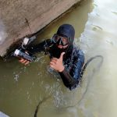
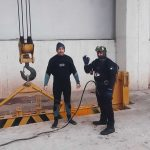
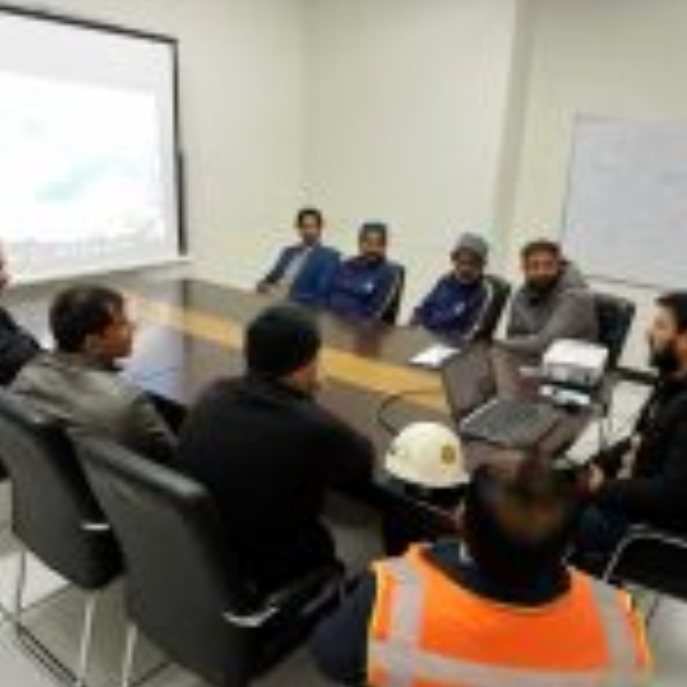
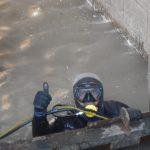
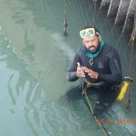
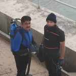
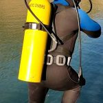
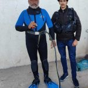
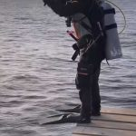
Jammed gates, lost equipment, blocked intakes. Call now and our team will mobilise.
Can't find what you need? Call us on +92 303 6504471 or send a message on WhatsApp.
Yes. We're based on Multan Road, Lahore, and travel to dams, barrages, powerhouses, industrial plants and ports anywhere in Pakistan.
Yes, 24 hours a day, 7 days a week. For jammed gates, lost equipment or blocked intakes, call +92 303 6504471 at any time.
Our divers hold PADI and NAUI certifications, and our team includes retired Pakistan Navy and Pakistan Army SSG commercial divers.
Your job is planned and carried out under an internationally recognised health and safety management system, with documented risk controls at every stage.
Often, yes. Diver inspections, SONAR and ROV surveys and wet welding let us assess and repair many structures while they stay in service.
Yes. We run PADI courses including Open Water, Advanced Open Water, Rescue Diver and specialty programs, plus introductory classes for beginners. A full range of swimming and scuba equipment is also available.
Use the form below, or email or WhatsApp us with the site location, scope of work and timeline. We'll come back to you with questions or a proposal.
Share a few details and our team will get back to you. For emergencies, call us directly, day or night.